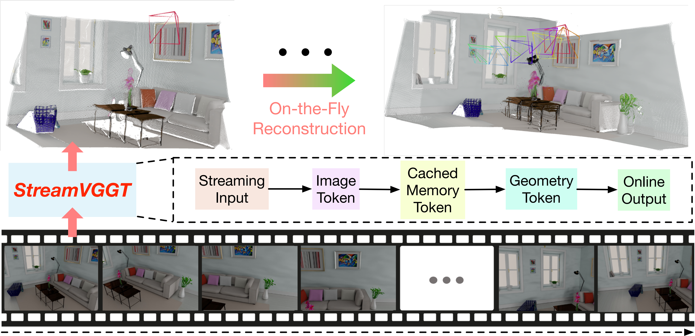
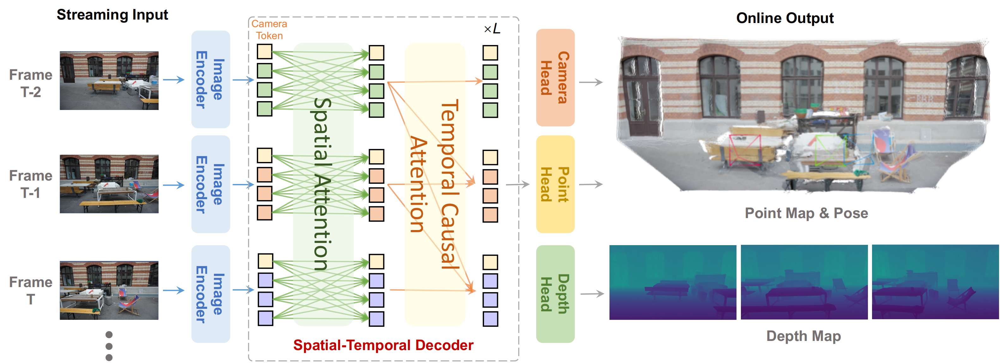
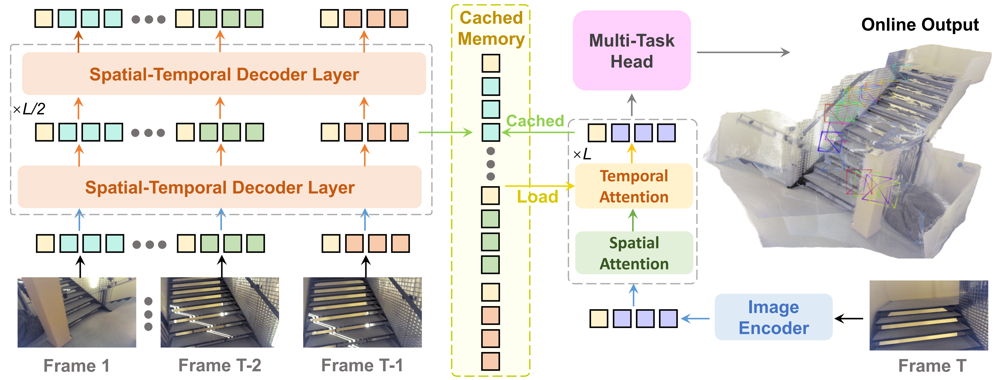
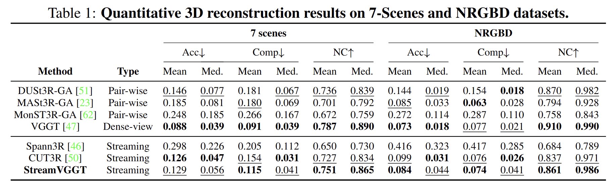
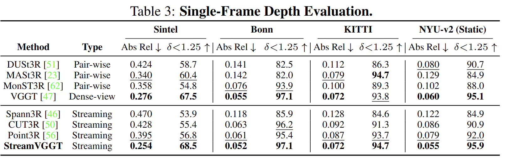
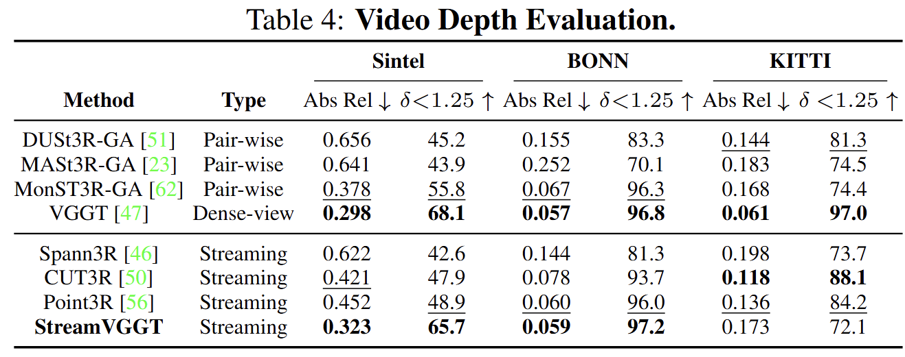
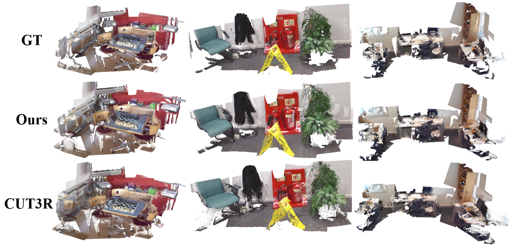
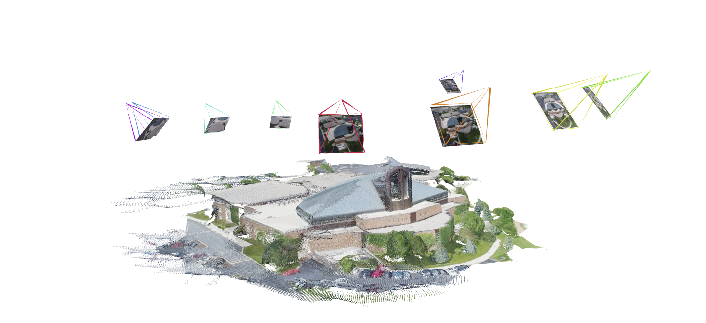

Overview of our contributions. We propose StreamVGGT, a novel causal transformer architecture specifically designed for efficient, real-time streaming 4D visual geometry reconstruction. Given a sequence of images, unlike offline models that require reprocessing the entire sequence and reconstructing the entire scene upon receiving each new image, our StreamVGGT employs temporal causal attention and leverages cached memory token to support efficient incremental on-the-fly reconstruction, enabling interative and real-time online applitions.
On-the-Fly Online Reonstruction from Streaming Inputs

Overall Framework of StreamVGGT
Our model consists of three main components: an image encoder, a spatio-temporal decoder, and multi-task prediction heads. During training, we utilize full-sequence inputs to provide the model with complete contextual information. To enforce temporal causality, we apply causal attention so the model can only attend to past frames at any given time step. This design encourages temporal modeling suitable for streaming inference.

During streaming inference, we cache the historical keys and values as implicit memory to store information from past frames. This memory allows the model to efficiently reuse previously computed representations, avoiding redundant computation and enabling consistent contextual understanding across time.

Results
3D Reconstruction
We evaluate the 3D reconstruction performance of StreamVGGT on 7-Scenes and NRGBD. Our method performs competitively when compared with existing streaming approaches and even surpasses the current state-of-the-art streaming model on several metrics.

Monocular Depth Estimation
We conduct evaluations of single-frame depth estimation across four datasets: KITTI, Sintel, Bonn, and NYU-v2, encompassing both dynamic/static scenes and indoor/outdoor environments. our method not only matches the overall best performers but also outperforms the current state-of-the-art streaming model on all datasets.

Video Depth Estimation
We conduct video depth estimation by assessing both the depth quality on a perframe basis and the consistency of depth across frames. Under aligned settings, our StreamVGGT exceeds SOTA streaming model on both the Sintel and Bonn benchmarks and attains performance comparable to the offline VGGT.

Visualizations
We provide 3D reconstruction visualizations from StreamVGGT and CUT3R, enabling a clear qualitative comparison.


Additional Visualizations of Point Map and Camera Pose Estimation

Bibtex
@article{streamVGGT,
title={Streaming 4D Visual Geometry Transformer},
author={Dong Zhuo and Wenzhao Zheng and Jiahe Guo and Yuqi Wu and Jie Zhou and Jiwen Lu},
journal={arXiv preprint arXiv:2507.},
year={2025}
}